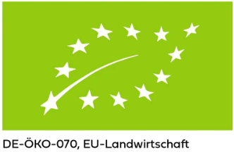

Als "Gesundheitapostel" stehen wir total auf "biologisch".
Die Samen und die Substrate kaufen wir ausschliesslich mit dem Bio-Siegel.
Satz 2
Herkunft unserer Microgreens

Als Substrat benutzen wir ausschliesslich Pflanzenerde mit dem "Bio" Siegel.
Von REWE.
Warum?
Weil Rewe gleich um die Ecke ist :).
Die Anzuchtsamen bestellen wir von folgenden Anbietern:
Mungo Bohnen
von Rossmann oder Müller (€6,98 per Kg)
Grüne Erbsen
von Denree via Denn's (€2,78 per Kg)
Broccoli Raab 1000 Gr.
Radish China Rose 500 Gr.
Mustard Yellow 500 Gr.
Red Kohlrabi 500 Gr.
Ruccola Rocket 500 Gr.
Luzerne 400 Gr. - ca. 150 Gr.
Coriander 500 Gr.